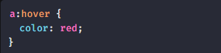
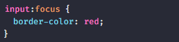

hover & focus
Ações do usuário
Alguns estilos só são aplicados quando o usuário faz alguma ação na
página.
:hover
Vai mudar a cor do link para vermelho quando o usuário passar o mouse
sobre o link.

:focus
-
É aplicado quando o elemento recebe o foco da ação do usuário que
pode ser feita utilizando o teclado ou clicando no elemento com o
mouse.
-
É comumente usado em campos de input como uma forma de mostrar qual
o input "ativo".
